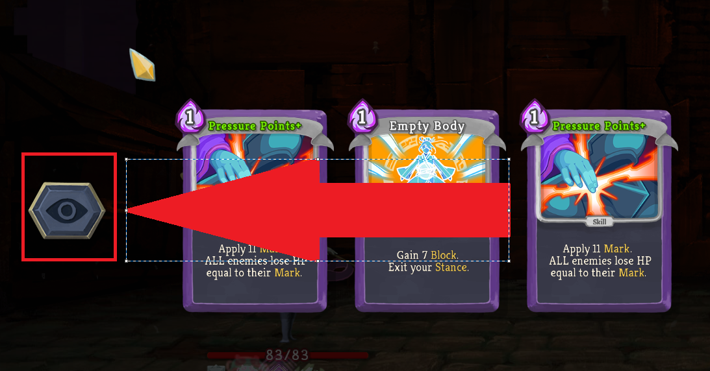

Good Design 1
In slay the spire, they let you look at your cards when you are doing ceratin actions that require you to choose between some cards that are not in your hand. This makes it convient to plan out your next moves. In the past this option was not available so for it to be introduced was really nice by the developers
